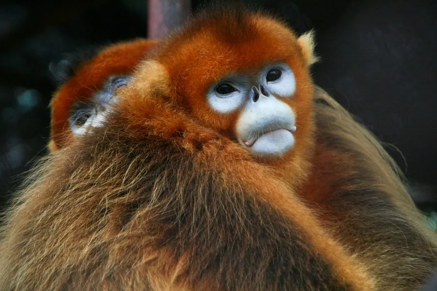

哺乳动物 · 动物界
川金丝猴 Rhinopithecus roxellana

中国特有的珍稀灵长类，金色的长毛与上翻的鼻孔是标志，栖息于中高海拔森林，冬季会向低处迁移。
- 分类
- 门脊索动物门纲哺乳纲目灵长目科猴科属仰鼻猴属
- 栖息环境
- 海拔 1500–3400 米的针阔混交林与亚高山针叶林
- 地理分布
- 中国四川、甘肃、陕西、湖北四省的山区，为中国特有物种
- 保护级别
- IUCN 濒危（EN）；中国国家一级保护动物
物种志
川金丝猴体长 0.5–0.8 米，尾长 0.5–0.7 米，雄性体重约 16–20 kg，雌性约 9–13 kg。它的面部呈蓝色，鼻梁短、鼻孔上翻，成年雄性嘴角有突出的肉瘤；体毛为金黄至橙黄色，肩背处长毛可达 30 cm 以上，在阳光下十分耀眼。
川金丝猴栖息于海拔 1500–3400 米的针阔混交林和亚高山针叶林，主食嫩叶、花芽、树皮和地衣，冬季食物匮乏时会啃食树皮与松萝。它们结成由多个一雄多雌单元组成的大群，可达数十至数百只，冬季向低海拔迁移、夏季回到高处，活动路线随食物变化。雌猴妊娠期约 7 个月，每胎 1 仔，幼猴毛色偏灰白，长大后逐渐变金。川金丝猴是中国特有物种，分布于四川、甘肃、陕西和湖北的山区，栖息地破碎化是主要威胁。
形态与习性
- 食性嫩叶、花芽、树皮与地衣，冬季啃食松萝
- 体长0.5–0.8 m，尾长 0.5–0.7 m
- 体重雄性约 16–20 kg，雌性约 9–13 kg
- 寿命野外约 20 年
- 繁殖妊娠期约 7 个月，每胎 1 仔
- 栖息海拔1500–3400 m，冬季向低海拔迁移
- 社会结构由多个一雄多雌单元组成大群
趣味知识
- 川金丝猴的鼻孔上翻，雨天容易打喷嚏，这是仰鼻猴的共同特征。
- 成年雄性肩背的金色长毛可超过 30 cm，在阳光下十分耀眼。
- 冬季食物匮乏时，它们会啃食树皮和松萝度日。
- 川金丝猴是中国特有物种，野外种群仅分布在四省山区。